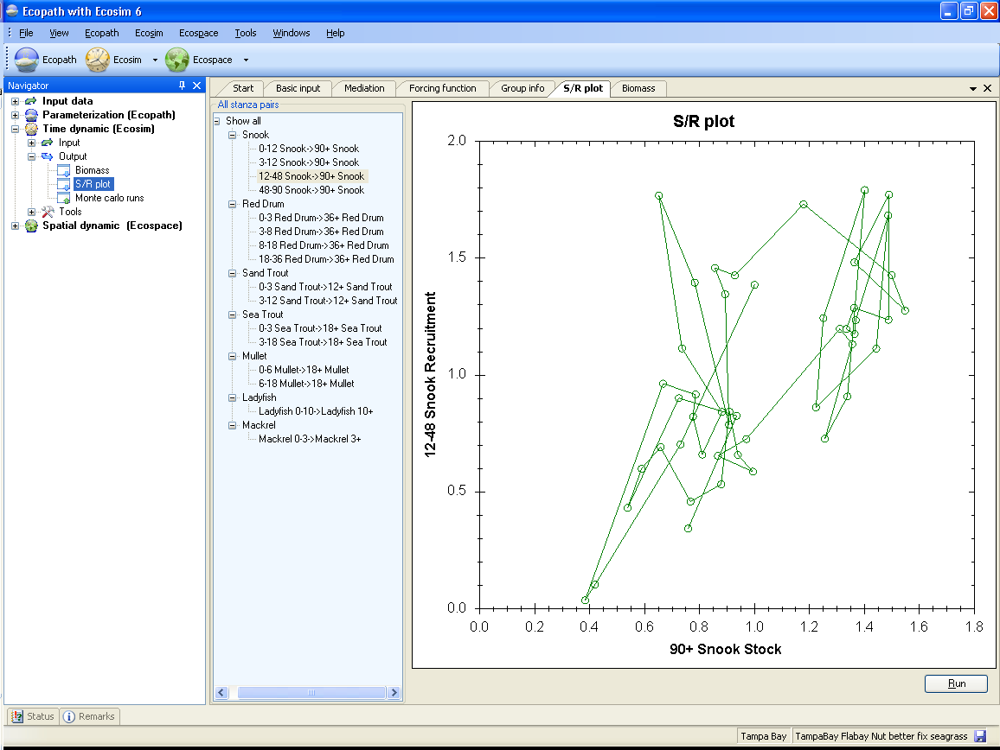

The S/R plot form displays the emerging stock-recruitment plot for the multi-stanza groups in your model, anabling users to test for the effects of compensatory recruitment in the model. Compensatory recruitment effects are usually expressed as a flat or dome-shaped relationship between numbers of juveniles recruiting to the adult pool versus parental abundance (the stock-recruit relationship). There is a way to create such an effect in Ecosim:
Set a non-zero feeding time adjustment for the juvenile with high EE, or high proportion of the ‘other’ mortality (the mortality not accounted for) being sensitive to changes in predator feeding time.
This represents density-dependent changes in juvenile mortality rate associated with changes in feeding time and predation risk. It is usually also important that the vulnerabilities of prey to the juvenile group (Vulnerabilities form) also be relatively low.
See Using Ecosim to study compensation in recruitment relationships for a more detailed description of density dependent recruitment in Ecosim. There you will find details of an Ecosim exercise you should do to check the stock recruitment curve of each multi-stanza group in your model. Always check the stock-recruitment curve shape, and play with Group info parameters that may affect it before proceeding to other policy analysis.
Running the stock-recruitment analysis
The S/R plot form utilizes the fishing mortality and biomass patterns from the Biomass form. Therefore you should first run the Ecosim simulation on the Biomass form before running the stock-recruitment analysis.
Ecosim calculates the stock-recruitment relationship between the oldest stanza in the group (i.e., the adult group) and each of its juvenile groups (i.e., separate plots are generated for the relationship between the adult stock size and each of the juvenile groups you have specified). To run the stock-recruitment analysis, select the juvenile group you wish to view from the menu at the left-hand side of the form (Figure 9.5) and click the Run button at the bottom right of the form.
Note that all stock-recruitment relationships are calculated simultaneously, so once you have run the analysis you can use the menu to look through all relationships.

Figure 9.5